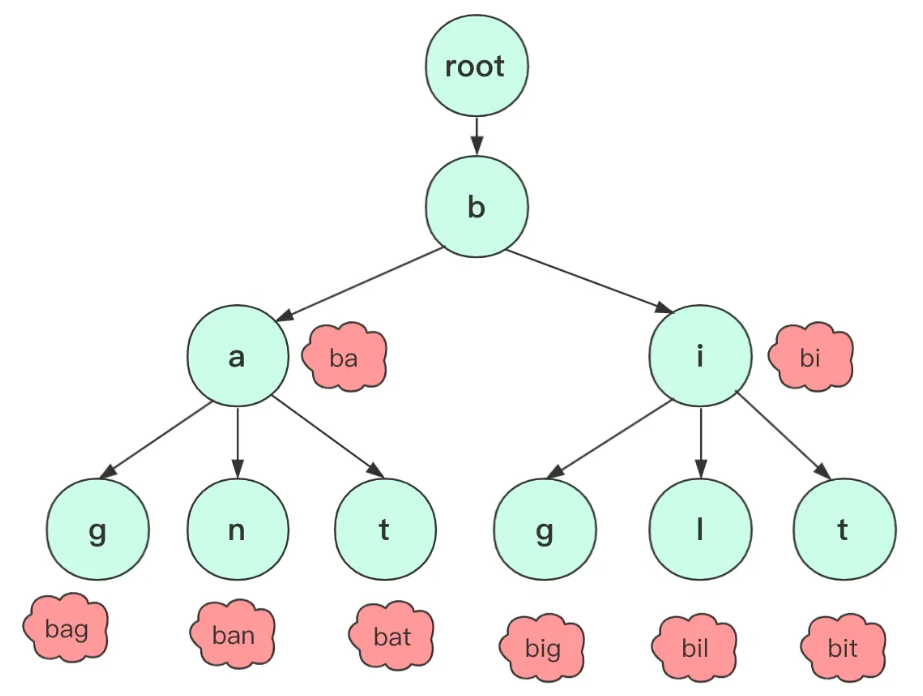

什么是字典树 字典树，是一种 以空间换时间 的数据结构，又称 Trie 树、前缀树，是一种树形结构，典型应用是统计、排序和保存大量字符串（但不仅限于字符串）。所以经常被搜索引擎系统用于文本词频统计。它的优点是可以 利用字符串的公共前缀来减少查询时间，最大限度地减少无谓的字符串比较，查询效率比哈希树高 。

可能大部分情况你很难直观或者有接触的体验，可能对前缀这个玩意没啥概念，可能做题遇到前缀问题也是暴力匹配蒙混过关，如果字符串比较少，使用哈希表等结构可能也能蒙混过关，但如果字符串比较长、相同前缀较多，那么使用字典树可以大大减少内存的使用和效率 。
字典树的性质 字典树是一种高效的数据结构，用于 存储和快速检索字符串集合 。它具有以下性质：
字典树的 根节点不包含任何字符 ，每个节点都代表一个字符，从根节点到叶节点的路径组成一个字符串。
每个节点可以包含 多个子节点 ，每个子节点代表一个字符，节点之间的连接表示字符之间的关系。
每个节点的子节点通过不同的字符来标识，不同节点之间的路径上的字符不会重复。
字典树中的每个节点都可以 存储一个附加值 ，用于表示该节点所代表的字符串的一些信息。
字典树可以 高效地插入和查找字符串 。插入操作将一个字符串的字符逐个添加到字典树中，查找操作根据给定的前缀或完整字符串，在字典树中检索相应的字符串。
字典树可以用于 前缀匹配 ，例如，可以快速找到所有具有相同前缀的字符串。
字典树的 空间复杂度相对较高 ，因为它需要为每个字符创建一个节点，但它可以通过压缩节点来减少空间占用。
设计实现字典树 上面已经介绍了什么是字典树，那么我们开始设计一个字典树吧！
对于字典树，可能不同的场景或者需求设计上有一些细致的区别，但整体来说一般的字典树有创建、插入、查询（指定字符串）、查询（指定前缀）操作。
以 LeetCode 实现字典树 为例，实现字符集是 26 个英文小写字母的字典树的创建、插入、查询操作。
trieCreate() 初始化字典树对象。void trieInsert(Trie *obj, char *word) 向字典树中插入字符串word。bool trieSearch(Trie *obj, char *word) 搜索字符串 word 是否在字典树中。bool trieStartsWith(Trie *obj, char *prefix) 搜索字符串的前缀 prefix 是否在字典树中。
定义字典树类 字典树中的每一个节点，都是一个 Trie 类，而这个节点标识的字符可以是字符集中的任意一个字符。简单地，可以使用一个 Trie 类型数组（长度为字符集大小）来标识所有子节点。同时，为了表示该节点是否是某一个字符串的结束字符，可以添加一个布尔类型的结束标记 isEnd。
1 2 3 4 5 6 7 #define NUMS (26) typedef struct Trie { struct Trie *children [NUMS ]; bool isEnd; char padding[7 ]; } Trie;
字典树创建（初始化） 字典树有一个根节点，且字典树的根节点不包含任何字符。所以，我们需要初始化一个 Trie 类，并置空所有的子节点地址，以表示根节点不包含任何字符。
1 2 3 4 5 6 7 8 9 10 11 Trie* trieCreate () { Trie *node = (Trie *)malloc (sizeof (Trie)); if (node == NULL ) { printf ("failed to create a trie node\r\n" ); return NULL ; } memset (node->children, 0 , sizeof (Trie)); node->isEnd = false ; return node; }
通过调用 trieCreate() 函数创建了节点 node，它不包含任何字符。
字典树插入字符串 插入字符串的过程是逐个字符地搜索并检查它们是否存在于字典树中。如果某个字符不存在，则需要在上一个字符对应的节点上创建一个新的子节点，并将该节点指向新的字符（新的节点）。这样，就能够正确地构建出整个字符串在字典树中的路径。
1 2 3 4 5 6 7 8 9 10 11 12 13 14 15 16 17 18 19 20 void trieInsert (Trie *obj, char *word) { Trie* curr = obj; for (int i = 0 ; word[i] != '\0' ; i++) { int index = word[i] - 'a' ; if (curr->children[index] == NULL ) { Trie* child = trieCreate(); if (child == NULL ) { printf ("failed to create a new trie\r\n" ); return ; } curr->children[index] = child; curr->children[index]->isEnd = false ; } curr = curr->children[index]; } curr->isEnd = true ; return ; }
从根节点开始遍历字符串的每一个字符，然后根据字符计算出在子节点数组中的索引位置：
如果该位置为空，则创建一个新的节点，并将该位置指向新节点；
然后，将当前节点更新为新节点 ，继续下一个字符的判断；
最后，将最后一个字符所在的节点标记为字符串的结尾，表示该字符串已经插入到字典树中。
字典树查询字符串 查询字符串的过程是在字典树已经建立好的情况下进行的。类似于插入过程，也是逐个字符地搜索并检查它们是否存在于字典树中（但不需要创建新的子节点）。如果在查询的过程中发现某个节点为空（未被初始化），则说明该字符串在字典树中不存在。如果成功遍历到最后一个字符所对应的节点，并且该节点标记为结束字符，则表明该字符串在字典树中存在；反之，如果最后一个字符对应的节点不是结束字符，则表明该字符串在字典树中不存在。所以 在查询过程中，我们需要注意判断节点是否为空以及最后一个字符对应节点的结束字符标记 。
1 2 3 4 5 6 7 8 9 10 11 bool trieSearch (Trie *obj, char *word) { Trie* curr = obj; for (int i = 0 ; word[i] != '\0' ; i++) { int index = word[i] - 'a' ; if (curr->children[index] == NULL ) { return false ; } curr = curr->children[index]; } return curr->isEnd; }
从根节点开始遍历字符串的每一个字符：
首先，根据字符计算出在子节点数组中的索引位置：
如果对应位置的子节点为空，则表示字典树中没有该字符串；
如果对应位置的子节点非空，则将当前节点更新为新节点，继续后续字符的判断；
最后，根据结束字符的状态，返回字符串是否存在。
字典树前缀查询 前缀查询的过程也是在字典树已经建立好的情况下进行的。与查询字符串的过程类似，我们仍然是逐个字符地搜索并检查它们是否存在于字典树中。不同之处在于，前缀查询不需要判断前缀字符串的最后一个字符是否是结束字符，只要能成功遍历到最后一个字符，就可以确认该前缀字符串存在于字典树中。
因为字典树的特点是每个节点都存储了字符集中的每个字符的子节点，所以只要前缀字符串中的每个字符都在字典树中存在对应的子节点，就可以确定该前缀字符串存在于字典树中。
1 2 3 4 5 6 7 8 9 10 11 bool trieStartsWith (Trie *obj, char *prefix) { Trie* curr = obj; for (int i = 0 ; prefix[i] != '\0' ; i++) { int index = prefix[i] - 'a' ; if (curr->children[index] == NULL ) { return false ; } curr = curr->children[index]; } return true ; }
字典树释放 字典树释放的过程需要释放 每个 节点的 所有子节点 的空间。如果某个节点的子节点不为空，则需要继续深入该子节点，释放它的子节点的空间，直到最底层的叶子节点。然后再回溯到上一层节点，继续释放它的其他子节点，直到所有节点的空间都被释放完毕。所以字典树的释放过程是一个递归地释放每个节点的所有子节点的过程。
1 2 3 4 5 6 7 8 9 10 11 void trieFree (Trie *obj) { if (obj == NULL ) { return ; } for (int i = 0 ; i < NUMS; i++) { if (obj->children[i]) { trieFree(obj->children[i]); } } free (obj); }
完整字典树代码 上面的代码汇总在一起就是完整的字典树的最基础的版本了。
1 2 3 4 5 6 7 8 9 10 11 12 13 14 15 16 17 18 19 20 21 22 23 24 25 26 27 28 29 30 31 32 33 34 35 36 37 38 39 40 41 42 43 44 45 46 47 48 49 50 51 52 53 54 55 56 57 58 59 60 61 62 63 64 65 66 67 68 69 70 71 72 73 74 75 76 77 78 79 80 81 82 83 84 85 86 87 88 89 90 91 92 93 94 #include <stdio.h> #include <stdlib.h> #include <stdbool.h> #include <string.h> #define NUMS (26) typedef struct Trie { struct Trie *children [NUMS ]; bool isEnd; char padding[7 ]; } Trie; Trie* trieCreate () { Trie *node = (Trie *)malloc (sizeof (Trie)); if (node == NULL ) { printf ("failed to create a trie node\r\n" ); return NULL ; } memset (node->children, 0 , sizeof (Trie)); node->isEnd = false ; return node; } void trieInsert (Trie *obj, char *word) { Trie* curr = obj; for (int i = 0 ; word[i] != '\0' ; i++) { int index = word[i] - 'a' ; if (curr->children[index] == NULL ) { Trie* child = trieCreate(); if (child == NULL ) { printf ("failed to create a new trie\r\n" ); return ; } curr->children[index] = child; curr->children[index]->isEnd = false ; } curr = curr->children[index]; } curr->isEnd = true ; return ; } bool trieSearch (Trie *obj, char *word) { Trie* curr = obj; for (int i = 0 ; word[i] != '\0' ; i++) { int index = word[i] - 'a' ; if (curr->children[index] == NULL ) { return false ; } curr = curr->children[index]; } return curr->isEnd; } bool trieStartsWith (Trie *obj, char *prefix) { Trie* curr = obj; for (int i = 0 ; prefix[i] != '\0' ; i++) { int index = prefix[i] - 'a' ; if (curr->children[index] == NULL ) { return false ; } curr = curr->children[index]; } return true ; } void trieFree (Trie *obj) { if (obj == NULL ) { return ; } for (int i = 0 ; i < NUMS; i++) { if (obj->children[i]) { trieFree(obj->children[i]); } } free (obj); } int main (int argc, char *argv[]) { Trie *root = trieCreate(); trieInsert(root, "apple" ); trieInsert(root, "banana" ); printf ("Search apple: %s\n" , trieSearch(root, "apple" ) ? "Found" : "Not Found" ); printf ("Search banana: %s\n" , trieSearch(root, "banana" ) ? "Found" : "Not Found" ); printf ("Search car: %s\n" , trieSearch(root, "car" ) ? "Found" : "Not Found" ); printf ("Search prefix bana: %s\n" , trieStartsWith(root, "bana" ) ? "Found" : "Not Found" ); trieFree(root); return 0 ; }
复杂度 时间复杂度：初始化为 $O(1)$，其余操作为 $O(|S|)$，其中 $|S|$ 是每次插入或查询的字符串的长度。
空间复杂度：$O(|T| \times \Sigma)$，其中 $|T|$ 为所有插入字符串的长度之和，$\Sigma$ 为字符集的大小。
为什么根节点不包含任何字符 字典树的根节点不包含任何字符是为了保持数据结构的一致性和简洁性。每个节点代表一个字符，根节点是整个字典树的起始点，它并不代表具体的字符。
如果根节点包含一个字符，那么在插入和搜索操作时就需要额外的处理逻辑。例如，在搜索一个字符串时，需要先判断根节点的字符是否匹配，然后再进入下一层的子节点进行匹配。这样的处理逻辑会增加代码的复杂性。
而将根节点作为一个特殊的节点，不包含任何字符，可以简化操作。在搜索一个字符串时，直接从根节点开始匹配 下一层的子节点 （node->children[x]）即可，不需要额外的判断逻辑。这样的设计使得字典树的实现更加简单和统一。
为什么字典树空间复杂度相对较高 字典树是一种以空间换时间的数据结构（空间复杂度相对较高）。这是因为 它需要存储每个节点的子节点指针 ，具体来说，字典树的空间复杂度与字典树中存储的字符串数量和字符串的平均长度相关。 每个节点都需要存储一个指向下一个字符节点的指针 ，而每个字符串的字符数量会决定树的深度。因此，当字典树中包含大量的字符串或者字符串的平均长度较长时，字典树的空间复杂度就相对较高。
哈希表实现的字典树 字典树基础班很容易，但很可能会出现一些延伸。
对于上面是 26 个字符的，我们很容易用 ASCII 找到对应索引，如果字符可能性比较多，用数组可能浪费的空间比较大，那我们也可以用哈希表实现字典树。使用哈希表替代数组，其实逻辑是一样的，只需要判断时候用哈希表判断是否存在对应的 key 即可。
1 2 3 4 5 6 7 8 9 10 11 12 13 14 15 16 17 18 19 20 21 22 23 24 25 26 27 28 29 30 31 32 33 34 35 36 37 38 39 40 41 42 43 44 45 46 47 48 49 50 51 52 53 54 55 56 57 58 59 60 61 62 63 64 65 66 67 68 69 70 71 72 73 74 75 76 77 78 79 80 81 82 83 84 85 86 87 88 89 90 91 92 93 94 95 96 97 98 99 100 101 102 103 104 105 106 107 108 109 #include <stdio.h> #include <stdlib.h> #include <stdbool.h> #include "uthash/src/uthash.h" typedef struct Trie { char ch; bool isEnd; struct Trie *children ; UT_hash_handle hh; } Trie; Trie* trieCreate () { Trie *node = (Trie *)malloc (sizeof (Trie)); if (node == NULL ) { printf ("failed to create a trie node\r\n" ); return NULL ; } node->ch = '\0' ; node->isEnd = false ; node->children = NULL ; return node; } void trieInsert (Trie *root, char *word) { Trie *curr = root; for (int i = 0 ; word[i] != '\0' ; i++) { Trie *child = NULL ; HASH_FIND(hh, curr->children, &word[i], sizeof (char ), child); if (child == NULL ) { child = trieCreate(); child->ch = word[i]; HASH_ADD(hh, curr->children, ch, sizeof (char ), child); } curr = child; } curr->isEnd = true ; } bool trieSearch (Trie *root, char *word) { if (root == NULL ) { return false ; } Trie *curr = root; for (int i = 0 ; word[i] != '\0' ; i++) { Trie *child = NULL ; HASH_FIND(hh, curr->children, &word[i], sizeof (char ), child); if (child == NULL ) { return false ; } curr = child; } return curr->isEnd; } bool trieStartsWith (Trie *root, char *prefix) { if (root == NULL ) { return false ; } Trie *curr = root; for (int i = 0 ; prefix[i] != '\0' ; i++) { Trie *child = NULL ; HASH_FIND(hh, curr->children, &prefix[i], sizeof (char ), child); if (child == NULL ) { return false ; } curr = child; } return true ; } void trieFree (Trie *root) { if (root == NULL ) { return ; } Trie *curr, *tmp; HASH_ITER(hh, root->children, curr, tmp) { trieFree(curr->children); } free (root); } int main (int argc, char *argv[]) { Trie *root = trieCreate(); trieInsert(root, "apple" ); trieInsert(root, "+861**01[]';/" ); printf ("Search apple: %s\n" , trieSearch(root, "apple" ) ? "Found" : "Not Found" ); printf ("Search +861**01[]';/: %s\n" , trieSearch(root, "+861**01[]';/" ) ? "Found" : "Not Found" ); printf ("Search car: %s\n" , trieSearch(root, "car" ) ? "Found" : "Not Found" ); printf ("Search prefix app: %s\n" , trieStartsWith(root, "app" ) ? "Found" : "Not Found" ); trieFree(root); return 0 ; }
下面为程序运行的结果。可以看到，使用哈希表实现字典树，可以处理的字符种类不再是仅限于英文字母。
1 2 3 4 Search apple: Found Search +861**01[]';/: Found Search car: Not Found Search prefix app: Found
关于 HASH_FIND、HASH_ADD 和 HASH_ITER 的使用可以看 这里 。
参考连接：https://segmentfault.com/a/1190000040801084